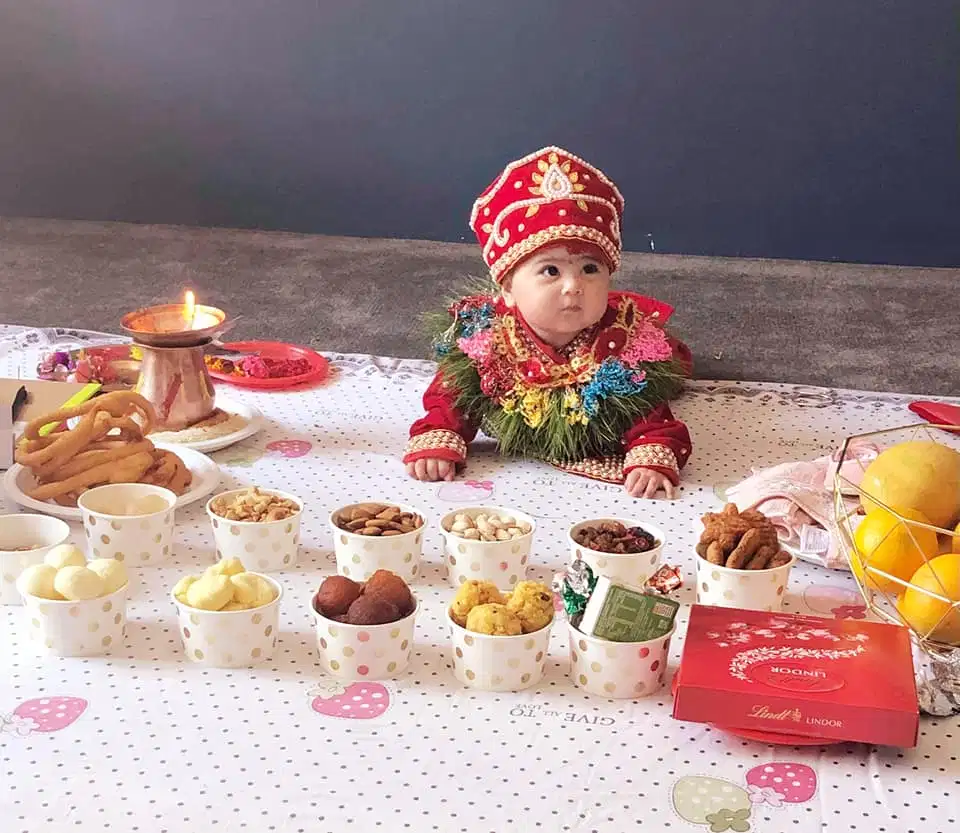
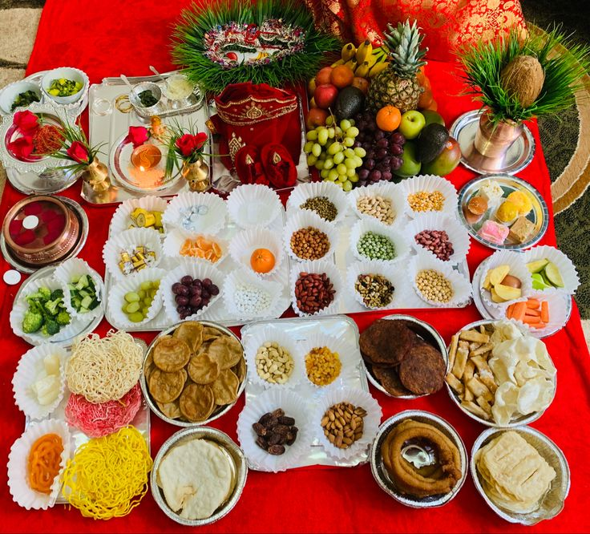

PASNI

Pasni, the Weaning Ceremony or the Rice Feeding Ceremony is a Nepalese celebration in which a child is first fed rice by the maternal grandfather. Although centuries old tradition, modern science has established the fact that child's digestive system is capable of processing solid food when they are approximately six months old which is why Pasni is held for when a baby turns six months old but it can vary between daughters and sons.This ceremony is held at five months for daughters, and six months for sons. An auspicious date and time is chosen by an astrologer, usually a Hindu, and all the closest relatives are invited to witness and to celebrate. The rice is the first and easily digestible solid food a baby eats. This custom varies with the variation of religion, caste and also place. Gurung, Magar serve kheer (rice pudding) which is rice cooked with milk and sugar. Similarly, Brahmin and Kshatris also do same. Whereas myriads of dishes are prepared and served in Newar. The main rice dish is served in one giant (often woven) plate of leaves. The remaining dishes, typically 84, are served around the main dish.The baby is dressed in saffron silk cloth (although modern families will often put a diaper (nappy) on, to minimize accidents.)

The baby is held by baby's mother while the entire family feed her or him the first taste of rice. It is the mother's right to feed the child first. This is because symbolically, after breastfeeding the child, she is asking the gods to bless the child who is now entering the world of other regular food. Musicians playing traditional music can be invited to start the function at the given auspicious time. After the baby has eaten, she or he will undergo another extensive puja (worship ceremony) often led by a priest and accompanied by chanting from ancient scriptures.For the rest of the day, the baby is dressed in a special outfit, usually made of red velvet and embroidered with silver and golden thread. The child is offered with gifts, money by close relatives, and gold and silver ornaments by grandparents. These ornaments include heavy silver anklets (kalli) carved with dragon at both the ends to keep the bad omens away from baby. These ornaments can be handed on as heirlooms. In some Newari communities, it is also common for sons to have upper lobe of the right ear pierced with gold ornaments with different beads.